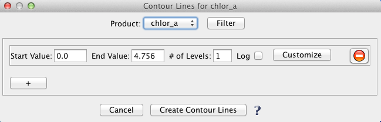

| Contour Lines | |
Creates contour lines for the currently loaded band or product.

|
To bring up the "Contour Lines" window click this tool button
in the "Layers" tool bar or select the
corresponding menu item in "Tools -> Contour" or right click on a product/band image and select "Contour".
NOTE: this tool can only be accessed if the image of a band or product is displayed. |
The user interface of "Contour Lines" tools is divided into 3 sections.  The top section enables the selection of a product or band as the source of the contour operator. The middle section allow the setting of the parameters Start Value, End Value, Number of Levels, and Log for the contour operator.
Sets the start value for contour levels.
Sets the start value for contour levels.
Specifies the number of contour levels.
log or linear contour interval.